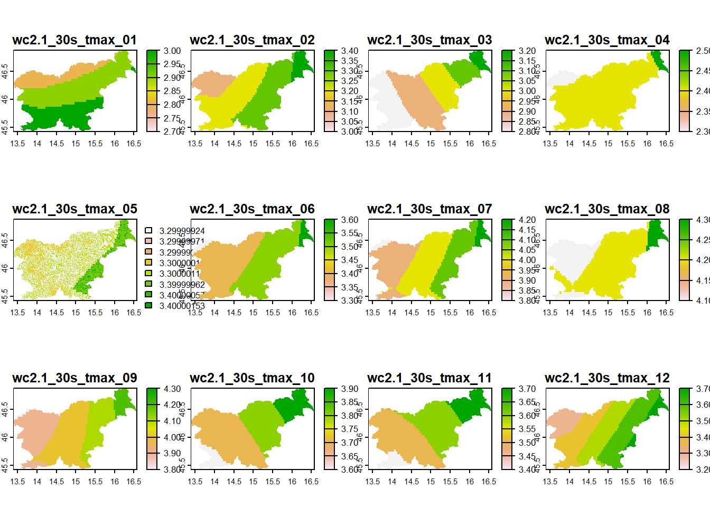

install.packages("geodata")
Povzetek
Na teh vajah boste:
- spoznali bazo podatkov
geodata, ki vključuje rastrske podatke z visoko ločljivostjo, - dostopali in prenesli rasterske podatke za nadmorske višine Slovenije,
- izračunali in prikazali naklon, aspekt in osončenost terena v Sloveniji,
- dostopali do slojev mesečnih temperatur Slovenije za sedanjost in dva scenarija za prihodnost,
- izračunali razliko v temperaturi ter nove sloje prikazali in smiselno obarvali z uporabo enostavnih R orodij.
Rastrski podatki z visoko prostorsko resolucijo v paketu geodata
Danes si bomo na vajah pogledali še paket geodata, ki vsebuje funkcije za dostop do različnih rastrskih podatkov z visoko prostorsko in časovno resolucijo.
Paket najprej instaliramo (samo enkrat, ce ga se nismo) in omogocimo uporabo funkcij (vedno, ko zaženemo R ali RStudio).
Naloga
Odprite nov R skript v meniju File tako, da kliknete New file in potem R script. Skript bo imel ime Untitled1 (ali Untitled2, če je že odprt prazen skript).
Shranite skript na namizje vašega računalnika in ga poimenujte Rastrski podatki z visoko ločljivostjo v R-u.
Kopirajte in prilepite spodnjo kodo v skript R, premaknite kazalec v prvo vrstico s kodo in kliknite Run. Premaknite kazalec na vsako vrstico, ki vsebuje kodo, in ponovite.
library(geodata)Vsebino dostopnih podatkovnih zbirk si lahko ogledamo s pomočjo dokumentacije paketa, do katere dostopamo s sledečo kodo:
?`geodata-package`S paketom geodata lahko dostopamo do:
- klimatskih podatkov,
- podatkov rabe tal,
- digitalnega modela nadmorskih višin,
- podatkov o tipih prsti in kamnin,
- državnih in administrativnih mej,
- prebivalstva, itd.
Mi bomo najprej bomo naložili podatke za nadmorske višine v Sloveniji z resolucijo/ločljivostjo 30 sekund (približno 1 km x 1 km) ). Do teh podatkov dostopamo s funkcijo elevation_30s(), ki od nas zahteva dve dodatni specifikaciji:
- kodo države, za katero želimo podatke (
country = "SI") in - mesto na računalniku, kamor bodo podatki shranjeni (
path = "01_data").
Rezultat shranimo v nov objekt slovenija_DMV. če je ukaz deloval, bo po nekaj sekundah v mapi 01_data nova datoteka, ki vsebuje podatke o nadmorskih višinah v Sloveniji, prav tako pa bomo imeli v R-ov delovnem okolju nov objekt z imenom slovenija_DMV. S funkcijo plot() lahko enostavno izrišemo podatke, z namenom pregleda njihove ustreznosti oziroma pravilnosti.
Naloga
Kopirajte in prilepite spodnjo kodo v R skript, premaknite kazalec v prvo vrstico s kodo in kliknite Run. Premaknite kazalec na vsako vrstico, ki vsebuje kodo, in ponovite.
slovenija_DMV <- elevation_30s(country = "SI", path = "01_data")
plot(slovenija_DMV)
Vprašanje
Ali podatki dejansko obsegajo ozemlje Slovenije? Ali so vrednosti in vzorec višin pričakovani, glede na vaše poznavanje ozemlja države?
Podatke o nadmorskih višinah lahko uporabimo za izračun naklona terena (slope), aspekta oz. ekspozicije terena (aspect) in osončenosti površja (hillshade). Ti sloji se nadalje uporabljajo za različne namene, npr. za opredelitev območij z vecjo plazovno nevarnostjo, za opredelitev območij z največjo osončenostjo ipd. Služijo pa lahko tudi kot podporni vizualni elementi pri pripravi tematskih zemljevidov, s kateremi poudarimo oziroma orišemo 3D lastnosti reliefa.
Naklon in aspekt v R-u izračunamo z uporabo funkcije terrain v paketu terra. Za izračun obeh novih rastrskih slojev potrebujemo rastrski sloj z nadmorskimi višinami (uporabili bomo slovenija_DMV) in določiti, kaj želimo izračunati (definirati moramo argument v =):
- za naklon določimo
v = "slope", - za aspekt določimo
v = "aspect".
Oba sloja bomo shranili v nov R-objekt (naklon in aspekt) in v datoteko na našem računalniku (filename =).
Če sta ukaza delovala, bosta po nekaj sekundah v mapi 01_data novi datoteki, ki vsebujeta podatke o naklonu in aspektu terena v Sloveniji, v našem delovnem okolju pa dve novi imeni. S funkcijo plot() enostavno izrišemo podatke. Bodite pozorni na enote v legendi:
- naklon je izračunan v %,
- aspekt pa v stopinjah
°(pove nam, koliko stopinj od severa je smer usmerjenosti terena posamezne rastrske celice)
Naloga
Kopirajte in prilepite spodnjo kodo v R skript, premaknite kazalec v prvo vrstico s kodo in kliknite Run. Premaknite kazalec na vsako vrstico, ki vsebuje kodo, in ponovite.
naklon <- terrain(slovenija_DMV, v = "slope", filename = "01_data/slovenija_naklon_wgs84.tif")
aspekt <- terrain(slovenija_DMV, v = "aspect", filename = "01_data/slovenija_aspekt_wgs84.tif")
Opomba
Ko ukaz za izračun s funkcijo terrain() izvedemo in shranimo datoteko na računalnik, bomo ob vsakem naslednjem zagonu funkcije dobili napako:
Error: [terrain] file exists. You can use 'overwrite=TRUE' to overwrite it
To je “varovalka”, da si datotek na računalniku pomotoma ne spreminjamo. Če bi dejansko želeli ustvariti nov izračun in ga shraniti na računalnik, dodamo argument overwrite=TRUE, ampak moramo biti potem pozorni, da si pomotoma v datoteka ne shranimo česa neželenega.
plot(naklon)plot(aspekt)Učinek osončenosti (hillshade) ni nič drugega kot dodajanje hipotetične osvetlitve terena glede na položaj svetlobnega vira. Uporablja se večinoma za dodajanje globine kartografskim prikazom (zanimivost: z isto metodo se izračuna tudi “osončenost” morskega dna za poudarjanje 3D prikaza morskih globin, kljub temu, da tam nikoli ne posije sonce). Osončenost je odvisna od naklona in aspekta terena. Funkcija, s katero izračunamo osončenost se imenuje shade(), zahteva pa naklon in aspekt izračunana v enoti radian, kar pomeni, da naših zgornjih izračunov ne moremo uporabiti neposredno. Da zadovoljimo potrebam funkcije shade(), bomo neposredno znotraj oklepajev, naklon in aspekt izracunali se enkrat in tokrat v vsako dodali argument unit = "radian". Funkciji shade() bomo ukazali, da normalizira podatke normalize = TRUE in shrani na nas racunalnik rezultat izracuna (filename = "01_data/slovenija_osoncenost_wgs84.tif").
Kot v mnogih predhodnih korakih, tudi tokrat informativno prikažemo sloj, ki mu bomo tokrat barve spremenimo v sive (grey(1:100/100)).
Naloga
Kopirajte in prilepite spodnjo kodo v R skript, premaknite kazalec v prvo vrstico s kodo in kliknite Run. Premaknite kazalec na vsako vrstico, ki vsebuje kodo, in ponovite.
osoncenost <- shade(terrain(slovenija_DMV, v = "slope", unit = "radian"),
terrain(slovenija_DMV, v = "aspect", unit = "radian"),
normalize= TRUE,
filename = "01_data/slovenija_osoncenost_wgs84.tif")plot(osoncenost, col = grey(1:100/100))Za infomativnejši prikaz dosedanjega dela, lahko vse 4 zemljevide prikažemo v mreži 2x2 (par(mfrow = c(2,2))) in jim dodamo smiselne naslove (main = "Informativen naslov")
Naloga
Kopirajte in prilepite spodnjo kodo v R skript, premaknite kazalec v prvo vrstico s kodo in kliknite Run. Premaknite kazalec na vsako vrstico, ki vsebuje kodo, in ponovite.
par(mfrow = c(2,2))
plot(slovenija_DMV, main = "Nadmorske višine v Sloveniji (m)")
plot(naklon, main = "Naklon terena v Sloveniji (%)")
plot(osoncenost, col = grey(1:100/100), main = "Osončenost terena v Sloveniji")
plot(aspekt, main = "Ekspozicija terena v Sloveniji (°)")par(mfrow = c(1,1)) # ponastavimo izris grafov na 1 x 1
Naloga
V novo, prazno skripto kopirajte ukaze, ki smo jih do sedaj izvedli (zacnite z ukazom library(geodata). Spomnite se, da funkcije install.packages() ne potrebujete zagnati več kot enkrat! Funkcijo library() pa morate zagnati vsakič, ko na novo zaženete R ali RStudio!
Vaša naloga je, da prilagodite kopirane ukaze, tako da:
- Si iz spodnje tabele izberete eno državo, ki ni Slovenija.
- Uporabite mednarodno oznako te drzave (v stolpcu
ISO2) in z uporabo funkcijeelevation_30s()prenesete podatke o nadmorskih višinah te izbrane države. Rezultate shranite v nov R-objekt. - Podatke o nadmorskih višinah izbrane države uporabite za izračun:
- naklona terena v izbrani državi,
- aspekta terena v izbrani državi,
- osončenosti v izbrani državi.
- Končni cilj naloge je, da prikažete vse štiri sloje za izbrano državo skupaj, kot smo jih prikazali za Slovenijo zgoraj.
country_codes()Rastrski podatki z visoko prostorsko in časovno resolucijo v paketu geodata
Nadaljujemo z mesečnimi temperaturami v Sloveniji. Podatki so na voljo kot del baze WorldClim s prostorsko ločljivostjo približno 1 kvadratni kilometer. Podatkovni nabor "tmax" (maksimalna temperatura) vsebuje mesečne vrednosti maksimalne temperature v Sloveniji. Podatki so povprečni za obdobje od 1950 do 2000 in temeljijo na opazovanjih s postajami za merjenje vremena in so interpolirani na ločljivost 1 km². Do njih dostopamo s funkcijo worldclim_country(), ki od nas zahteva dva že znana parametra (country = "SI", path = "01_data"), dva pa sta specifična za to funkcijo:
- z
var = tmaxdefiniramo kateri nabor podatkov želimo prenesti, - in z
res = 0.5definiramo resolucijo/ločljivost, ki jo želimo, v našem primeru 0.5 arc minute oziroma 30 arc sekund (približno 1 km x 1 km):
Če v konzoli zaženemo ime objekta slovenija_tmax_mesecno, se nam izpišejo njegove lastnosti, s funkcijo names() pa izpišemo imena slojev, ki jih objekt vsebuje. S funkcijo plot() ponovno izrišemo podatke in preverimo kakšen geografski obseg zajema nabor podatkov.
Naloga
Kopirajte in prilepite spodnjo kodo v R skript, premaknite kazalec v prvo vrstico s kodo in kliknite Run. Premaknite kazalec na vsako vrstico, ki vsebuje kodo, in ponovite.
OPOMBA: Nabor podatkov je precej velik in lahko traja nekaj časa, da se prenese iz serverjev!
slovenija_tmax_mesecno <- worldclim_country(country = "SI", var = "tmax", res = 0.5, path = "01_data")slovenija_tmax_mesecnoclass : SpatRaster
dimensions : 240, 480, 12 (nrow, ncol, nlyr)
resolution : 0.008333333, 0.008333333 (x, y)
extent : 13, 17, 45, 47 (xmin, xmax, ymin, ymax)
coord. ref. : lon/lat WGS 84 (EPSG:4326)
source : SVN_wc2.1_30s_tmax.tif
names : SVN_w~max_1, SVN_w~max_2, SVN_w~max_3, SVN_w~max_4, SVN_w~max_5, SVN_w~max_6, ...
min values : -7.6, -8.4, -6.8, -4.4, 0.5, 3.7, ...
max values : 10.5, 10.2, 13.7, 17.4, 23.1, 26.4, ... names(slovenija_tmax_mesecno) [1] "SVN_wc2.1_30s_tmax_1" "SVN_wc2.1_30s_tmax_2" "SVN_wc2.1_30s_tmax_3"
[4] "SVN_wc2.1_30s_tmax_4" "SVN_wc2.1_30s_tmax_5" "SVN_wc2.1_30s_tmax_6"
[7] "SVN_wc2.1_30s_tmax_7" "SVN_wc2.1_30s_tmax_8" "SVN_wc2.1_30s_tmax_9"
[10] "SVN_wc2.1_30s_tmax_10" "SVN_wc2.1_30s_tmax_11" "SVN_wc2.1_30s_tmax_12"plot(slovenija_tmax_mesecno)Podatke bomo obrezali le na območje Slovenije, zato bomo s funkcijo gadm() dostopali do globalnih administrativnih meja. Ena od možnosti, ki jo imamo, je prenos meje posamezne države (level = 0). Ostale možnosti vključujejo tudi meje pokrajin (level = 1) ali občin (level = 2). Mi bomo prenesli samo državno mejo Slovenije (country = "SI") in shranili v objekt z imenom slovenija_shp. Argument path = "01_data" pove funkciji, v katero mapo naj shrani ta vektorski sloj na trdem disku računalnika. S funkcijo plot() izrišemo, da preverimo, če dejansko obsega ozemlje Slovenije:
Naloga
Kopirajte in prilepite spodnjo kodo v R skript, premaknite kazalec v prvo vrstico s kodo in kliknite Run. Premaknite kazalec na vsako vrstico, ki vsebuje kodo, in ponovite.
slovenija_shp <- gadm(country = "SI", path = "01_data", level = 0)plot(slovenija_shp)Nabor podatkov slovenija_tmax_mesecno bomo obrezali s funkcijo crop() iz paketa terra. Definirati moramo podatke (slovenija_tmax_mesecno), vektorski sloj, s katerim obrezujemo (slovenija_shp), in določiti, da ohrani le celice znotraj meja Slovenije (mask = TRUE).
Naloga
Kopirajte in prilepite spodnjo kodo v R skript, premaknite kazalec v prvo vrstico s kodo in kliknite Run. Premaknite kazalec na vsako vrstico, ki vsebuje kodo, in ponovite.
slovenija_tmax_mesecno <- terra::crop(slovenija_tmax_mesecno,
slovenija_shp,
mask = TRUE) plot(slovenija_tmax_mesecno)
Mesečna temperatura v Sloveniji za prihodnost
Intergovernmental Panel on Climate Change (IPCC) je v preteklosti na različne načine definiral scenarije razvoja človeške družbe in s tem povezanih izpustov toplogrednih plinov v prihodnosti. Ti scenariji služijo kot izhodišča za razumevanje vplivov človestva na globalno okolje do leta 2100 (in kasneje). Začetki scenarijev segajo v leto 2000 in so bili do danes večkrat posodobljeni.
V letu 2021 je IPCC definirala do sedaj najkompleksnejše scenarije, ki so jih poimenovali Shared-Socioeconomic pathways (SSPs). SSP scenariji opisujejo različne mogoče smernice razvoja družbe in okolja v prihodnosti in so označeni s številkami od 1 do 5. Scenarija SSP 1 in 2 opisujeta svet, v katerem se sprejmejo ukrepi za zmanjšanje emisij ogljikovega dioksida (CO2) in se uporabljajo bolj okolju prijazni viri energije. Scenarija SSP 3 in 4 opisujeta svet, v katerem se emisije CO2 nadaljujejo z visokimi stopnjami, kar lahko povzroči velike spremembe v podnebnih pogojih. Scenarij SSP 5 pa opisuje svet, v katerem se sprejmejo ukrepi za zmanjšanje emisij CO2 in se uporabljajo bolj okolju prijazni viri energije, vendar pa se hkrati spodbuja tudi visoka stopnja urbanizacije in industrializacije (IPCC porocilo. Okoljski podatki, ki ustrezajo tem scenarijem in so izračunani z najnovejšimi metodami in modeli (CMIP6), so bili javno objavljeni in prvič prosto dostopni 1. decembra 2022!!

SSP scenariji upoštevajo tako gospodarski kot tudi družbeni razvoj in poskušajo napovedati, kako se bodo koncentracije toplogrednih plinov spreminjale v prihodnje ter kako bo to vplivalo na spremembe v okolju.

Do podatkov za prihodnost po scenarijih ssp in metodologiji CMIP6 dostopamo s funkcijo cmip6_tile(). Za razliko od prejšnih primerov, ko smo obseg podatkov definirali z oznako drzave, so tu podatki razdeljeni na kvadrante (tile). Da dobimo kvadrant, v katerem se nahaja Slovenija, moramo podati ustrezno lokacijo v obliki geografske širine in dolžine (lon = 13, lat = 45), ki jih na primer razberemo iz google-ovih zemljevidov. Kot lahko opazite, sem koordinate definiral le do stopinje natačnosti - predvsem zato, ker kvadranti zajemajo relativno velike površine (primer v nadaljevanju). Poleg koordinate, funkcija cmip6_tile(). od nas zahteva nekaj ze znanih parametrov (country = "SI", path = "01_data", var = "tmax"), trije pa so specifični za to funkcijo:
model =,ssp =intime =.
Z argumentom model = definiramo tip modela, ki je bil uporabljen za projekcije v prihodnost. Izbiramo lahko med mnogimi, v tem trenutku za nas to ni bistveno, lahko pa si ogledate seznam vseh moznosti tukaj. Mi bomo uporabili prvega po abecednem redu "ACCESS-CM2". Z argumentom ssp = definiramo katerega od petih scenarij za prihodnost želimo (glej sliko zgoraj), z argumentom time = pa za katero časovno obdobje (za zdaj so na voljo: “2021-2040”, “2041-2060”, “2061-2080”). Mi bomo prenesli podatke za pričakovane najvišje mesečne temperature v Sloveniji po scenarijih 126 in 585 za leta 2061 - 2080. Kot smo že nekajkrat do sedaj, bomo podatke tudi izrisali:
Naloga
Kopirajte in prilepite spodnjo kodo v R skript, premaknite kazalec v prvo vrstico s kodo in kliknite Run. Premaknite kazalec na vsako vrstico, ki vsebuje kodo, in ponovite.
OPOMBA: Nabor podatkov je precej velik in lahko traja nekaj časa, da se prenese iz serverjev!
slovenija_tmax_ssp126_2080 <- cmip6_tile(lon = 13,
lat = 45,
model = "ACCESS-CM2",
ssp = "126",
time = "2061-2080",
var = "tmax",
path = "01_data")slovenija_tmax_ssp585_2080 <- cmip6_tile(lon = 13,
lat = 45,
model ="ACCESS-CM2",
ssp = "585",
time = "2061-2080",
var = "tmax",
path = "01_data")
Opozorilo
V zadnjem času se nekaj R paketov, povezanih s prostorskimi analizami upokojuje, novejši paketi pa se morajo zaradi tega posodobiti in postati neodvisni od upokojenih paketov, kar drži tudi za paket geodata. Do sedaj smo brez težav lahko prenesli vse sloje, iz nekega razloga pa slojev za prihodnost s funkcijo cmip6_tile() trenutno ni mogoče prenesti iz serverjev (vsaj na mojem računalniku). Če bosta funkciji vrnili sporočilo:
The geodata server is down for maintenance. It is expected to be back online on October 12, 2023. download failed
bomo uporabili alternativno možnost. Enake sloje smo uporabili na lanskih vajah in sem jih začasno naložil na tej povezavi.
Ko sloje prenesete iz interneta na računalnik, jih kopirajte v mapo 01_data, ki se najverjetneje nahaja v mapi Moji dokumenti oziroma Documents.
plot(slovenija_tmax_ssp126_2080)plot(slovenija_tmax_ssp585_2080)Oba nabora podatkov bomo še obrezali, saj jih v naslednjem koraku potrebujemo v enakem obsegu kot slovenija_tmax_mesecno.
slovenija_tmax_ssp126_2080 <- terra::crop(slovenija_tmax_ssp126_2080,
slovenija_shp,
mask = TRUE) slovenija_tmax_ssp585_2080 <- terra::crop(slovenija_tmax_ssp585_2080,
slovenija_shp,
mask = TRUE) Računanje z rastri
Rastrski podatki nam omogočajo enostavno aplikacijo računskih operacij, kot so:
- sestevanje (+),
- odstevanje (-),
- deljenje (/),
- mnozenje (*),
- korenjenje (
sqrt()), itd.
Mi bomo izračunali, za koliko se bo spremenila mesečna temperatura v Sloveniji, glede na oba zgornja scenarija v primerjavi s sedanjostjo. Vsi trije rastrski objekti imajo 12 slojev, v vsakem od njih sloji ustrezajo enemu od mesecev v letu. Prvi sloj je v vseh januar, dvanajsti sloj pa v vseh december. Če so podatki urejeni na ta način, lahko z uporabo računske operacije med dvema rastrskima objektoma, izračunamo vrednosti po parih slojev, tako kot si sledijo po vrstnem redu (npr. januar prihodnost - januar sedanjost, vse do december prihodnost - december sedanjost). Rezultat računskih operacij shranimo v nova objekta:
razlika_v_temperaturi_danes_ssp126_2080 <- slovenija_tmax_ssp126_2080 - slovenija_tmax_mesecno
razlika_v_temperaturi_danes_ssp585_2080 <- slovenija_tmax_ssp585_2080 - slovenija_tmax_mesecnoS funkcijo plot() izrišemo in vidimo kakšne so ocenjene razlike v maksimalni temperature na ozemlju Slovenije v prihodnosti:
plot(razlika_v_temperaturi_danes_ssp126_2080)
plot(razlika_v_temperaturi_danes_ssp585_2080)Z nekaj dodatki, lahko nasi grafi izgledajo bistveno bolj informativni:
- določimo skupno lestvico legende (
range = c(0 - 8); glej legende zgoraj), - izberemo ustreznejše barve (
heat.colors()v obratnem vrstnem redurev()- bela do rdeča), - dodamo še ime meseca na katerega se prikaz nanaša z
main = month.name:
terra::plot(razlika_v_temperaturi_danes_ssp126_2080,
range = c(0, 8),
col = rev(heat.colors(999)),
main = month.name)terra::plot(razlika_v_temperaturi_danes_ssp585_2080,
range = c(0, 8),
col = rev(heat.colors(999)),
main = month.name)